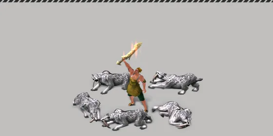
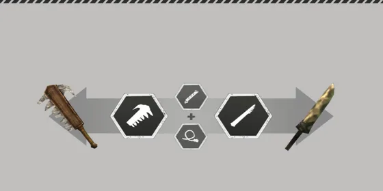

หน้าแรก › เก็บของและคราฟต์
คุณสมบัติของไอเทม ใช้ได้
คุณสมบัติแฝงและคุณสมบัติหายาก (สีเขียว) — ได้มาตอนเก็บของ ส่งต่อตอนคราฟต์อย่างไร และแต่ละอย่างทำอะไร
บางหัวข้อในหน้านี้ยังไม่เสร็จ
วัตถุดิบแต่ละชิ้นอาจมี คุณสมบัติ ติดมา เช่น «แข็งแรง» «ความหนาแน่นสูง» หรือคุณสมบัติสีเขียวอย่าง «ดำเงา» · เมื่อนำไปคราฟต์ คุณสมบัติของวัตถุดิบในช่องหลักจะกลายเป็นคุณสมบัติของผลงาน เช่น พลังโจมตีเพิ่ม ความทนเพิ่ม หรือเอฟเฟกต์พิเศษอย่างเลือดออก

ดูคุณสมบัติที่ไหน
- เปิด ข้อมูลไอเทม ของชิ้นที่ต้องการ
- คุณสมบัติแสดงเป็นป้าย พร้อมระดับ — สีบอกความหายาก:
| สี | ความหมาย |
|---|---|
| เขียว | คุณสมบัติหายาก — ผลพิเศษ |
| เหลือง | คุณสมบัติที่ดี |
| ปกติ | คุณสมบัติพื้นฐาน |
| เทา | คุณสมบัติที่เป็นผลลบ |
- แตะป้ายเพื่ออ่านคำอธิบาย · คุณสมบัติหายากสายต่อสู้/เก็บของไม่มีตัวเลขในหน้าค่าสถานะ ให้อ่านจากคำอธิบายของป้าย
คุณสมบัติที่ได้ตอนเก็บของ ใช้ได้
ตอน เก็บของ แล่ซาก หรือเก็บเกี่ยวจากแปลงปลูก ของแต่ละชิ้นอาจได้คุณสมบัติ 2 ทาง:
- คุณสมบัติประจำแหล่ง — แหล่งบางชนิดให้คุณสมบัติคงที่เสมอ (เช่น หนังแมมมอธมันเยิ้ม) · คุณสมบัติหลักตัวแรกได้ +1 ระดับต่อค่าดัชนีแปรผัน ของเกาะที่เกิน 1 — นับค่าดัชนีได้สูงสุด 6 บนเกาะเลเวลต่ำกว่า 60 และ 8 บนเกาะเลเวล 60 · ค่าดัชนี 6 ขึ้นไปนับเต็มเฉพาะตอนเก็บแบบไร้ที่ติ ถ้าไม่ไร้ที่ติจะนับเท่าค่าดัชนี 5
- คุณสมบัติแฝงแบบสุ่ม — ทอย เหลือง · เทา · เขียว แยกกัน ชิ้นเดียวจึงได้หลายสีพร้อมกันได้ ไม่จำกัดจำนวน · ทุกค่าไม่ขึ้นกับสกิลหรือค่าดัชนีของเกาะ
| สี | โอกาสต่อชิ้น | ระดับที่ได้ |
|---|---|---|
| เหลือง (ดี) | 12.5% · ผลผลิตจากแปลงปลูก 50% | 4 |
| เทา (ผลลบ) | ราว 5.4% (3/7 ของโอกาสเหลือง) · เฉพาะวัสดุที่มีคู่คุณสมบัติเทา | 5 |
| เขียว (หายาก) | มือเปล่า 0.1% · ถือเครื่องมือ Lv30 0.2% · Lv60 0.3% · แล่สัตว์ใหญ่ ×2 | 1 |
- ตัวคูณ — คุณสมบัติ «ความลับของการเก็บรวบรวม» บนเครื่องมือที่ถืออยู่ (ของที่สวมไม่นับ) และฉายา/วิจัยแคลนที่มี «อัตราคุณสมบัติที่แฝงอยู่/หายาก» คูณโอกาสของทั้ง 3 สีด้วย (1 + ค่ารวม) · สูงสุด 100% ต่อสี
- แปลงปลูก — ความเชี่ยวชาญสารานุกรมเลเวล 20 คูณเฉพาะสีที่เลือก ×1.2 (เหลือง 50% → 60% หรือเขียว 0.1% → 0.12%) · เขียวจากแปลงมีเฉพาะผลผลิตกลุ่มดอกไม้ ผลไม้ ธัญพืช และของกินได้ · ผักกินได้ เห็ด อ้อย กาแฟ ฯลฯ สุ่ม 1 ใน 3 เขียวอาหารด้านล่าง ส่วนใบไม้ ใบชา ใยแมงมุมไม่มีเขียว
- ชิ้นแถม (จาก «พิเศษ พิเศษ» หรือสกิลเก็บของ) ได้คุณสมบัติเหมือนชิ้นหลัก
| ตัวอย่าง | เขียว | เหลือง | เทา |
|---|---|---|---|
| มือเปล่า | 0.1% | 12.5% | 5.4% |
| เครื่องมือ Lv30 | 0.2% | 12.5% | 5.4% |
| เครื่องมือ Lv60 | 0.3% | 12.5% | 5.4% |
| เครื่องมือ Lv60 + ความลับของการเก็บรวบรวม | 0.6% | 25% | 10.7% |
| แล่สัตว์ใหญ่ ด้วยมีด Lv60 + ความลับของการเก็บรวบรวม | 1.2% | 25% | 10.7% |
| ผลผลิตแปลงปลูกทั่วไป (เขียวเฉพาะชนิดที่มี) | 0.1% | 50% | — |
| ฝ้าย/ปอจากแปลง (กลุ่มเส้นใย) | — | 50% | 21.4% |
ของที่เก็บมาก่อนอัปเดตนี้ไม่ถูกแก้ย้อนหลัง
คุณสมบัติที่ออกตามชนิดวัสดุ (ตัวอย่างคู่ เหลือง ↔ เทา · เขียวถ้ามี):
| วัสดุ | เหลือง ↔ เทา | เขียว |
|---|---|---|
| กระดูก · แร่โลหะ | แข็งแรง ↔ นุ่ม · น้ำหนักเบา ↔ หนัก · โครงสร้างที่แน่นหนา ↔ เปราะบาง · ความหนาแน่นสูง ↔ ต่ำ · แหลม ↔ ทื่อ · ส่วนคม ↔ ส่วนกลม · อิ่ม ↔ ว่างเปล่า | ดำเงา · การสั่นสะเทือนต่ำ · รูปทรงฟันปลากว้าง · รูปทรงตะขอแคบ |
| หนัง · หนังติดขน | น้ำหนักเบา ↔ หนัก · เส้นใยแข็งแรง ↔ นุ่ม · ความหนาแน่นสูง ↔ ต่ำ · ความเสียดสีสูง ↔ ต่ำ · ความมันวาวต่ำ ↔ สูง · พื้นผิวอ่อนนุ่ม ↔ หยาบ · ยืดหยุ่นสูง ↔ ต่ำ · แข็งแรง ↔ นุ่ม · รูปแบบที่งดงาม ↔ ยุ่งเหยิง | — |
| หิน | แข็งแรง ↔ นุ่ม · ความหนาแน่นสูง ↔ ต่ำ · ส่วนคม ↔ ส่วนกลม · รูปแบบที่งดงาม (ไม่มีคู่เทา) | แตกหักง่าย |
| ไม้ | รูปแบบที่งดงาม ↔ ยุ่งเหยิง · สารฆ่าเชื้อแรง ↔ อ่อน · ความหนาแน่นสูง ↔ ต่ำ · น้ำหนักเบา ↔ หนัก · แข็งแรง ↔ นุ่ม | แตกหักง่าย |
| เส้นใย (ฝ้าย ปอ กก) | พื้นผิวอ่อนนุ่ม ↔ หยาบ · ยืดหยุ่นสูง ↔ ต่ำ · เส้นใยแข็งแรง ↔ นุ่ม · ความหนาแน่นสูง ↔ ต่ำ · น้ำหนักเบา ↔ หนัก | — |
| ดินโคลน | — | แตกหักง่าย |
| ผลผลิตแปลงปลูก | มันเยิ้ม · ความสด (ไม่มีเทา) | ดอกไม้ = แรงบันดาลใจที่เต็มไปด้วยพลังชีวิต · ผลไม้ และหัวทิวลิป = โชคลาภหลั่งไหลมาพร้อมกับสายฝน · ธัญพืช = สัมผัสของแม่ · ของกินอื่น ๆ = สุ่ม 1 ใน 3 |
ผลพิเศษของความสำเร็จแบบไร้ที่ติตอนเก็บ ใช้ได้
ตอนเก็บ แล่ หรือเก็บเกี่ยวแบบ ไร้ที่ติ ของบางชนิดได้ผลพิเศษ (โอกาสไร้ที่ติดู โอกาสสำเร็จและล้มเหลว):
| วัสดุ | ผลตอนไร้ที่ติ |
|---|---|
| หนังธรรมดา | โอกาสแปรรูป +1 · ติด «ระดับค่าทนทานสูง» 1 และ «ความยืดหยุ่น» 1 |
| หนังติดขน | ติด «ระดับค่าทนทานสูง» 1 (ไม่เพิ่มโอกาสแปรรูป) |
| หนังเกราะ | โอกาสแปรรูป +3 · ติด «ระดับค่าทนทานสูง» 1 และ «ความยืดหยุ่น» 3 |
| แร่ | โอกาสแปรรูป +1 · ติด «ความยืดหยุ่น» 1 · เปลี่ยนจาก «ก้อน» เป็น «ก้อนใหญ่» |
| ฝ้ายจากแปลง | ติด «ระดับค่าทนทานสูง» 7 |
| ปอจากแปลง (รวมปอเขตร้อนจากแปลง) | ติด «ระดับค่าทนทานสูง» 7 และ «ความแข็ง» 7 |
- โอกาสแปรรูปเริ่มต้น ของวัตถุดิบ: แร่ 5 · หนังธรรมดา 4 · อื่น ๆ 3 (หนังติดขนและหนังเกราะ 3) — แปลว่าแร่ไร้ที่ติได้ 6 หนังธรรมดาไร้ที่ติได้ 5 หนังเกราะไร้ที่ติได้ 6 (ดูเพิ่มที่การคราฟต์)
- มีข้อผิดพลาดระหว่างการเก็บรวบรวม (ยังได้ของ — ดู โอกาสสำเร็จและล้มเหลว) ติด «ระดับค่าทนทานต่ำ» ระดับ 2 และแร่ หนังธรรมดา หนังเกราะ เสียโอกาสแปรรูป 1 (แร่เหลือ 4 · หนังธรรมดาเหลือ 3 · หนังเกราะเหลือ 2)
- ไร้ที่ติไม่เพิ่มความทนทานของของที่เก็บแล้ว และไม่เพิ่มเลเวลคุณสมบัติเหลืองอีก
- ผลงานที่คราฟต์ได้ไร้ที่ติได้โอกาสแปรรูปเพิ่มด้วย — ดู การคราฟต์
คุณสมบัติส่งต่อตอนคราฟต์ ใช้ได้

- มีแค่วัตถุดิบใน ช่องหลัก ที่ส่งคุณสมบัติต่อ
- ไม่มีการสุ่มหายแล้ว — ทุกขั้นที่คราฟต์ (รวมขั้นชิ้นส่วน ใบมีด เชือก แผ่น …) คุณสมบัติที่ผลงานชนิดนั้นรับได้จะติดไปครบเสมอ ไม่มีข้อความแจ้งว่าคุณสมบัติหลุด · ที่หายได้มีแค่ 3 กรณี: เฉลี่ยแล้วต่ำกว่า 1 · ไม่ได้อยู่ในช่องหลัก · ผลงานชนิดนั้นไม่รับคุณสมบัตินั้น
- ช่องหลักมีหลายชิ้น:
- คุณสมบัติสีเหลือง/เทา/ปกติ — ระดับของผลงาน = ผลรวมระดับของทุกชิ้นในช่องหลัก ÷ จำนวนชิ้น ปัดลง (ชิ้นที่ไม่มีคุณสมบัตินั้นนับ 0) · ได้ 0 = ไม่ติด
- คุณสมบัติสีเขียว — มีแค่ ชิ้นเดียว ในช่องหลักก็พอ (ไม่ต้องเฉลี่ย) · เขียวชนิดเดียวกันไม่ซ้อนกัน
- ฉายาและ «ความลับของการเก็บรวบรวม» ไม่มีผลตอนคราฟต์ (มีผลเฉพาะตอนเก็บ)
- สูตร แปรรูป (ตัดแต่ง หลอม ฟอก ฯลฯ) คุณสมบัติอยู่ครบ · แปรรูปได้ไร้ที่ติ = คุณสมบัติที่สูตรเพิ่มให้ได้ +1 ระดับ · แปรรูปผิดพลาด = คุณสมบัติที่สูตรเพิ่มให้ได้น้อยลง 1 ระดับ (ไม่ต่ำกว่าระดับเดิมของชิ้น)
- ไม่จำกัดจำนวนคุณสมบัติที่ส่งต่อได้
- หน้าต่าง ผลลัพธ์ที่คาด ของการคราฟต์/สร้างแสดงคุณสมบัติที่ผลงานจะมีและระดับก่อนกดทำ — เหลืองและเทาตรงกับผลจริง ส่วนคุณสมบัติหายากที่ต้องสุ่ม 1 ใน 2 ตอนคราฟต์เสร็จจะขึ้นเป็น «???»
ตัวอย่าง: ช่องหลักของรองเท้าใช้หนัง 3 ชิ้น — ชิ้นแรก «ความหนาแน่นสูง» ระดับ 6 อีกสองชิ้นไม่มี → ผลงานได้ ระดับ (6+0+0) ÷ 3 = 2 · ถ้าทั้งสามชิ้นเป็นระดับ 6 ผลงานได้ระดับ 6 เต็ม · ส่วนหนังชิ้นเดียวที่ติด «ดำเงา» (เขียว) ก็พอให้ผลงานได้คุณสมบัติเขียวแล้ว
| ชนิดผลงาน | ใช้ได้กับ |
|---|---|
| อาวุธ | อาวุธทุกชนิด |
| เครื่องมือ | เครื่องมือเก็บของ เลื่อย อีเต้อ พลั่ว จอบ หม้อ ครก กระทะ ตะแกรง เขียง เข็ม ฉมวก ฯลฯ |
| เสื้อผ้า/เครื่องประดับ | เสื้อผ้า หมวก ถุงมือ รองเท้า กระเป๋า เครื่องประดับ |
| เฟอร์นิเจอร์ | โต๊ะงานช่าง เฟอร์นิเจอร์ที่มีค่าสถานะบ้าน ที่เก็บของ |
| สิ่งปลูกสร้าง | บ้าน ที่พักพิง คลัง สิ่งป้องกัน |
| อาหาร | อาหารที่คราฟต์ใหม่ |
คุณสมบัติวัตถุดิบกลายเป็นอะไร ใช้ได้
เมื่อผลงานเป็นชนิดจริง คุณสมบัติวัตถุดิบจะแปลงเป็นคุณสมบัติของผลงาน — ค่าต่อระดับตามนี้ (คุณสมบัติสีเทาให้ผลตรงข้ามด้วยค่าเดียวกัน):
| ผลงาน | คุณสมบัติวัตถุดิบ | ได้ | ต่อ 1 ระดับ |
|---|---|---|---|
| อาวุธ | แข็งแรง | บัฟการโจมตี | +3.33 |
| อาวุธ | ความหนาแน่นสูง | บัฟค่าทนทาน | +10 |
| อาวุธ | น้ำหนักเบา | บัฟความแม่นยำ | +4.5 (โอกาสโดน +0.45%) |
| อาวุธ | โครงสร้างที่แน่นหนา | บัฟความรุนแรง | โอกาสคริติคอล +0.67% |
| อาวุธ | แหลม | บัฟเจาะเกราะ | +10 |
| อาวุธ | ส่วนคม | ความเสียหายต่อส่วนร่างกายสัตว์ | +10% |
| อาวุธ | อิ่ม | บัฟอัตรามึนงง | +1% |
| เครื่องมือ | แข็งแรง · โครงสร้างที่แน่นหนา · น้ำหนักเบา · ความหนาแน่นสูง | บัฟการโจมตี · ความรุนแรง · ความแม่นยำ · ค่าทนทาน | เท่าอาวุธ |
| เครื่องมือ | แหลม | บัฟทักษะในการสร้าง (ทุกสาย) | +1 |
| เครื่องมือ | ส่วนคม | บัฟทักษะรวบรวม (ทุกแบบ) | +1 |
| เครื่องมือ | อิ่ม | บัฟทักษะก่อสร้าง | +1 |
| เสื้อผ้า/เครื่องประดับ | เส้นใยแข็งแรง | บัฟการป้องกัน | +2 |
| เสื้อผ้า/เครื่องประดับ | ความหนาแน่นสูง | บัฟค่าทนทาน | +10 |
| เสื้อผ้า/เครื่องประดับ | น้ำหนักเบา | บัฟการหลบหลีก | +1.5 |
| เสื้อผ้า/เครื่องประดับ | บาง · ระบายอากาศได้ดี · มันเยิ้ม · นุ่มนิ่ม | บัฟต้านทานความร้อน · ความชื้น · ลม · ความเย็น | +1 |
| เสื้อผ้า/เครื่องประดับ | ความมันวาวต่ำ (สูง = ลบ) | บัฟทักษะในการหลบซ่อน | +1 (−1) |
| เสื้อผ้า/เครื่องประดับ | รูปแบบที่งดงาม (ยุ่งเหยิง = ลบ) | บัฟค่า CHA | +1 (−1) |
| เครื่องประดับ | ความเสียดสีสูง (ต่ำ = ลบ) | บัฟการต้านทานการล้ม | +1% (−1%) |
| เสื้อ/หมวก | พื้นผิวอ่อนนุ่ม · ยืดหยุ่นสูง · แข็งแรง | บัฟทักษะสร้าง · เก็บรวบรวม · ก่อสร้าง | +1 |
| เฟอร์นิเจอร์ | รูปแบบที่งดงาม | บัฟความสบาย (พักในบ้านแล้วความล้าลดเร็วขึ้น 0.075/วินาที) | +1 |
| เฟอร์นิเจอร์ | สารฆ่าเชื้อที่มีฤทธิ์แรง | ฆ่าเชื้อในบ้าน (พักแล้วสุขภาพฟื้น +0.0075/วินาที) | +1 |
| เฟอร์นิเจอร์ (กล่อง) | น้ำหนักเบา | เพิ่มพื้นที่จัดเก็บ | +3 ช่อง |
| เฟอร์นิเจอร์/สิ่งปลูกสร้าง | ความหนาแน่นสูง | บัฟค่าทนทาน (สิ่งปลูกสร้าง) | +2 |
| สิ่งปลูกสร้าง | แข็งแรง | บัฟการโจมตีสิ่งปลูกสร้าง | +1 |
- ผลของคุณสมบัติสีเทาตรงข้าม เช่น นุ่ม = ดีบัฟการโจมตี หนัก = ดีบัฟความแม่นยำ (เครื่องมือที่หนักไม่เสียความแม่น)
- ความเสียดสีสูง/ต่ำใช้กับ เครื่องประดับ เท่านั้น · ผู้เล่นโดนสัตว์ตีแล้วมีโอกาสล้ม 5% ต่อฮิตที่โดนจริง ความเสียดสีสูงระดับ 5 ขึ้นไปทำให้ไม่ล้ม
- ผลงานจริงเป็นชนิดไหนดูจากแท็กของไอเทมนั้น ถ้ายังเป็นชิ้นส่วน (ใบมีด ด้าม เชือก) จะส่งต่อคุณสมบัติให้ขั้นถัดไปก่อน
คุณสมบัติหายากของวัตถุดิบ แปลงเป็นคุณสมบัติหายากของผลงาน สุ่ม 1 ใน 2 อย่าง (สุ่มตอนคราฟต์เสร็จ):
| วัตถุดิบ | ผลงาน | ได้อย่างใดอย่างหนึ่ง |
|---|---|---|
| ดำเงา | อาวุธ | โจมตีปิดเกม · ปาดิน |
| การสั่นสะเทือนต่ำ | อาวุธ | ซาดิสม์ · ต่อต้านความเจ็บปวด |
| รูปทรงฟันปลากว้าง | เครื่องมือ | เก็บอย่างบ้าคลั่ง · พิเศษ พิเศษ |
| รูปทรงตะขอแคบ | เครื่องมือ | ผู้เก็บรวบรวมที่พิถีพิถัน · ความลับของการเก็บรวบรวม |
| แตกหักง่าย | โต๊ะทำงาน/สิ่งปลูกสร้าง | ระยะเวลาสั้นลง · พื้นที่เพิ่มเติม |
คุณสมบัติหายากของอาหาร (เช่น «สัมผัสของแม่») ดูที่ การกิน
คุณสมบัติหายากที่มีผล ใช้ได้
| คุณสมบัติ | เกิดเมื่อ | ผล |
|---|---|---|
| โจมตีปิดเกม | ตีคริติคอล (100%) | เป้าหมาย เลือดออก −6 พลังชีวิต/วิ นาน 10 วิ |
| แดงเผือด | ตีคริติคอล (50%) | เป้าหมายเลือดออก −4/วิ นาน 10 วิ |
| ซาดิสม์ | ตีคริติคอล (100%) | ตัวเองฟื้นพลังชีวิต +6/วิ นาน 10 วิ |
| คู่หูคู่โหด | ตีคริติคอล (50%) | ตัวเองฟื้นพลังชีวิต +4/วิ นาน 10 วิ |
| ปาดิน | ม้วนตัวหลบสำเร็จ (50%) | ศัตรู เสียสมาธิ ความแม่นยำ −40% นาน 8 วิ |
| ปาดิน (ขั้นเล็ก) | ม้วนตัวหลบสำเร็จ (20%) | ศัตรูความแม่นยำ −20% นาน 8 วิ |
| เก็บอย่างบ้าคลั่ง | เก็บ/แล่สำเร็จ (50%) | กระปรี้กระเปร่า พลังงาน +3/วิ นาน 10 วิ |
| พิเศษ พิเศษ | เก็บของ | โอกาส 10% ได้ของเพิ่มอีกชิ้น (ชิ้นแถมได้คุณสมบัติเหมือนชิ้นหลัก) |
| ความลับของการเก็บรวบรวม | เก็บของ (เครื่องมือที่ถืออยู่) | โอกาสได้คุณสมบัติแฝงทั้งเหลือง เทา เขียว ×2 (+100%) · ไม่มีผลตอนคราฟต์ |
| ผู้เก็บรวบรวมที่พิถีพิถัน | เก็บของ | โอกาสเก็บแบบไร้ที่ติ +5% |
| ต่อต้านความเจ็บปวด | ม้วนตัว / ปัดป้อง | ช่วงเวลาม้วนตัวและปัดป้องนานขึ้น 50% |
| พื้นที่เพิ่มเติม | โต๊ะทำงาน | ฝากทำได้เพิ่ม 1 ชิ้น |
| ระยะเวลาสั้นลง | โต๊ะทำงาน | เวลาฝากทำ −5% |
- เลือดออกบนสัตว์ลดพลังชีวิตจริง และถ้าสัตว์ตายจากเลือดออกจะได้ซากตามปกติ · ไอคอนสถานะขึ้นบนตัวผู้เล่นและบนตัวสัตว์
- คุณสมบัติที่นับคือของทุกชิ้นที่สวมอยู่ + เครื่องมือที่ใช้เก็บ (ถ้าซ้ำกันใช้ระดับสูงสุด) · ชิ้นที่ความทนหมดไม่นับ
ระดับคุณสมบัติบนอุปกรณ์ ใช้ได้
คุณสมบัติที่ให้ค่า — ต้านทานอากาศทุกชนิด บัฟการป้องกัน บัฟการโจมตี ความแม่นยำ ความรุนแรง บัฟค่าทนทาน ทักษะคราฟต์/เก็บของ ค่าสถานะ หลบซ่อน ความจุในการจัดเก็บ ฯลฯ — มาได้สองทางบนชิ้นเดียวกัน:
- ตามแบบของชิ้น — หลายชิ้นขึ้นตามเลเวลชิ้น เช่น ถุงมือขนสัตว์ฤดูหนาวมี บัฟต้านทานความเย็น = 1 + เลเวล × 0.05 (Lv60 = 4) · เศษปัดครึ่งขึ้น (3.95 → 4) ยกเว้นความจุในการจัดเก็บปัดลง
- คุณสมบัติแฝง ที่ติดมาตอนเก็บ/คราฟต์
ระดับที่ใช้จริง = ตามแบบ + แฝง (ไม่เกินระดับสูงสุดของคุณสมบัตินั้น) · หน้าข้อมูลไอเทมโชว์ค่ารวม · ป้ายตอนคราฟต์/เก็บของสำเร็จขึ้นเป็น «Lv ตามแบบ → Lv รวม»
| ตัวอย่าง (ต้านทาน 1 แต้ม = ความเหนื่อยล้าหมวดนั้น −3%) | ต้านทานความหนาวเย็น | ความเหนื่อยล้าหมวดหนาว |
|---|---|---|
| ถุงมือขนสัตว์ฤดูหนาว Lv60 ไม่มีแฝง | 4 | −12% |
| ถุงมือเดียวกัน + แฝงบัฟต้านทานความเย็น 2 | 6 | −18% |
| ชุดกันหนาวครบ 5 ชิ้น Lv60 ไม่มีแฝง | 24 | −72% |
- คุณสมบัติของวัตถุดิบ/โครงสร้าง (แข็งแรง ความหนาแน่นสูง ฯลฯ ที่สูตรคราฟต์เช็ก) ยังเหมือนเดิม: ค่าแฝงแทนที่ค่าตามแบบ · เงื่อนไขสูตรคราฟต์ไม่เปลี่ยน
- ตอนคราฟต์ ส่งต่อเฉพาะค่าแฝง แล้วผลงานบวกค่าตามแบบของตัวเองอีกที
- ความจุในการจัดเก็บ (ดัดแปลงติดกระเป๋าหรือแฝง): ระดับ = จำนวนช่องกระเป๋าที่เพิ่ม (ที่เก็บของ)
- ชิ้นที่ ความทนหมด — คุณสมบัติทั้งหมดของชิ้นนั้นไม่ทำงาน (ต้านทาน ภูมิต้านทาน ความจุ บัพต่าง ๆ) จนกว่าจะซ่อม · พังหรือซ่อมเสร็จ ค่าในหน้าค่าสถานะเปลี่ยนทันที
- คุณสมบัติอาหารในแบบ (เป็นพิษต่อคน · เย็น · อาหารเพิ่มความแข็งแรง ฯลฯ) ก็คิดตามเลเวลชิ้นเช่นกัน — ผลตอนกินดูที่ การกินและดื่ม
เคล็ดลับ
ยังไม่มีในเซิร์ฟ: ภัยที่คุณสมบัติกันได้ ยังไม่เสร็จ
อุปกรณ์บางชิ้นมีคุณสมบัติ «การป้องกันความเสียหายจากลาวา» «ภูมิต้านทานประกายไฟ» «การป้องกันเสียงคำรามของทีเร็กซ์» — สวมแล้วไอคอนสถานะขึ้น แต่เซิร์ฟยังไม่มีลาวา ประกายไฟ หรือเสียงคำรามที่ทำความเสียหาย จึงยังไม่เห็นผล · ส่วน «การป้องกันพายุภูเขาไฟ» ใช้ได้เต็มแล้ว — ดู พายุภูเขาไฟ